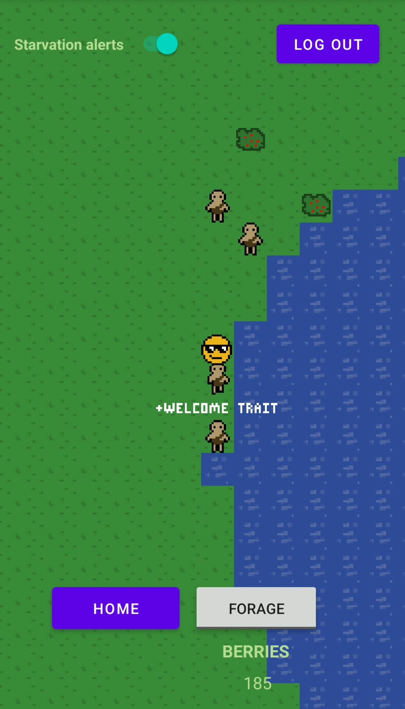

0.2 · 2026-10-23
Email accounts, names and patch notes
Development Version 2
I have replaced all the custom built username and passwords system with a google firebase account auth with TLS. So your
passwords are super safe! protected and housed by google.
Accounts
- Sign up with an email and a password. Tap the link in the email we send you, then log in.
- Forgot your password? Tap Forgot password? and we'll email you a reset link.
- The app keeps you logged in. Log Out from the game screen when you want to switch accounts.
- The game server never sees your password, and keeps no email address.
Names
- Every new character gets a name: 3 to 16 letters, numbers, spaces, - and '.
- Tap any character to see its name.
Patch notes
- The Patch notes system has been implemented, each update I'll share out patch notes to everyone.
- The Patch notes button brings them back, and All updates opens every update's page.
Behind the scenes
- Every connection to the server is now encrypted.
- An app that's out of date is now told to update, with a link to the newest build.
THANK YOU FOR PLAYING
Please send an email if you have any questions about the game, or you want access to it while it's in development!
jared.allen.games@gmail.com
